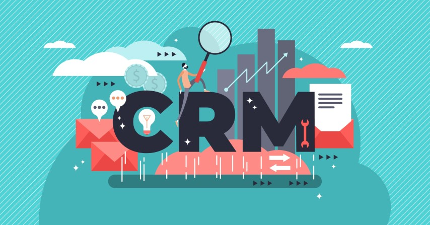

I am a DotNet full stack developer, working in a product-based company called Logicsoft Pvt. Ltd. with the title of senior DotNet developer. The company has been in the field of software products for the book trade for more than 30 years. Here we are developing business solutions for the book trade in multiple domains like e-commerce Web apps, Windows forms, Android mobile apps, etc. Here my main development focused on AspNetCore based web application development, and also i am participating in Winforms Development with the help of DotNet and C# programming knowledge. I started my career here on after 2017 with the designation of software engneer. Throughout this entire development journey with logicsoft, my knowledge has stepped up to the next levels, and I have learned how to enjoy coding and the taste of code in here.
In 2015, I began working for Mukils software. In the early stages of my career with Mukils Software, my full implementations were Windows Forms applications with VB.Net. Then I worked with Angular JS-based web applications, WCF and WPF. This is the place where I started to learn new things about programming.
In simple words, I am the first graduate from a simple former family. I have completed my Masters graduation in Computer Science at H.H. Rajah's College, Pudukkottai, under Bharathidasan University, Trichy. In my college days, I worked as a trainer for computer applications such as Microsoft Office, Photoshop, Macromedia Flash, and C and C++. My programming ability has grown to the level of trying to write snake games with C and Visual Basic 6.0. In that time, I also tried to learn HTML, CSS, and Javascript to write web applications. In that attempt, I moved to a DotNet based web application development platform ASP.Net and windows forms applications to get result of FLAMES. That's where my career started to build in DotNet.
Bharathidasan University | 2012 - 2014
Bharathidasan University | 2009 - 2012
Logic soft Pvt. Ltd., | Since 2017
Mukils Software | 2015 - 2017
In the past experience i have worked on many projects with angular JS, C#.Net, AspNetCore. I would like to tell something about those projects
This is a non-banking financial corporate based loan system that will help to issue and manage loan applications for personal, mortgage, gold and also for buying new vehicles. This project is fully implemented with AngularJS, WCF, Visual Basic, SQLServer, and Entity Framework.
This is my first project with Angular JS and WCF. I can say I have participated almost on all pages and all service modules like initialising loan request approval and also in the EMI collections, including report generation. Financial reports like balancesheet partner management and things like that. This is my first project with Angular JS, WCF, Entity Framework, LINQ, .
This solution helps to maintain the relationship between a business provider and their customers by making appointments and followups for the customers with their representatives and assign tasks to them here. Also it has inventory modules. This application fully implemented with AngularJS, WCF, Visual Basic, SQLServer, JQuery.
I can say I have participated almost on all modules like followups, todo, appointments including report generation like representative wise growth analysis in both frontend and backend. Here i have learned lot about real customer management from a business point of view.
This is a winforms application with visual basic and SQLServer. In this application, I have worked in the sales module and some reports like stock and fast moving items analysis. This work is to migrate the existing version of POS software to a new architecture with new ideas and coding standards.
In this project alone, I have learned about programing and coding standards. I attempted but did not complete the implementation with WPF. But with that attempt i have learned about XML and best way of events handling. I have learned lot about sql injection, view tables and complex query writtings.
I have been working on implementing Web API / Web Applications with AspNetCore with numerous versions like 2.1, 3.1, 5.0, and 6.0. In addition with AspNetCore I am using razor pages, and MVC patterns, dependency injection, middlewares, Themes, cookie authentication, autherization, view components and tag helpers.
With the help of netstandard, I have written many libraries to support multiple domains of Dotnet like AspNetcore, Framework, etc., Here also I have worked on numerous netstandard versions 2.1, 2.0, 1.2, and 1.1. Before start working on netstandard, I feel uncomfortable working on multiple Dotnet domains many times.
Little bit started to learn and work with Blazor web assembly and Blazor server, It's an awesome implementation of Microsoft. While experimenting with Blazor I have experienced how innovations will take importance in the industry. while having thoughts like this I was embarrassed about being a software developer.
I have written many apps and tools with Winforms and console apps like database comparer, and Duplicate files Finder. Initially, my career started with winforms only. I don't have count for the apps that i have created with winforms and console applications. User controles, Crystal Reports, dev-express controls, Dev-Express reports and etc.
I have working knowledge on following libraries and techologies, These Technologies makes my work more easy and clean.
Social Links